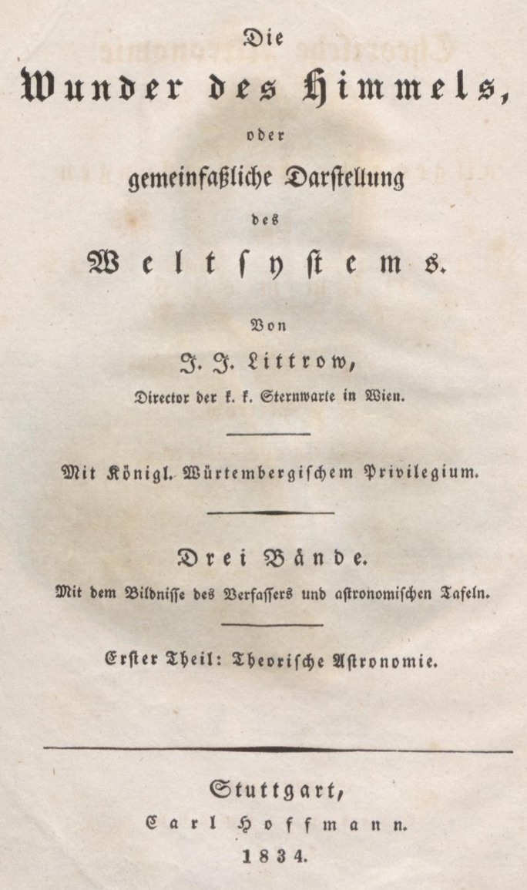
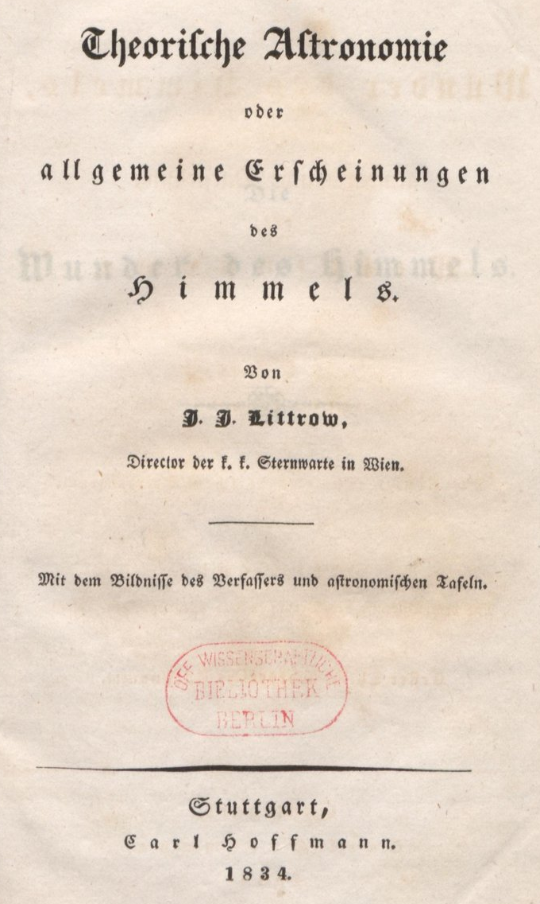

DTA Basisformaten Standardformat für die Volltext-Digitalisierung von historischer Texte zur einheitlichen Analyse
Titelseite einer Reihe und zugehörige Haupttitelseite
Kodierung von Titelblättern in Reihen – Reihentitel

<titlePagetype="series"><docTitle><titleParttype="main"><hirendition="#g">Die<lb/><hirendition="#b">Wunder des Himmels,</hi><lb/>
oder</hi><lb/><hirendition="#b">gemeinfaßliche Darſtellung</hi><lb/><hirendition="#g">des<lb/><hirendition="#b">Weltſyſtems.</hi></hi></titlePart></docTitle><lb/><byline><hirendition="#g">Von</hi><lb/><docAuthor><hirendition="#g">J. J. Littrow</hi></docAuthor>,<lb/>
Director der k. k. Sternwarte in Wien.
</byline><lb/><milestonerendition="#hr"unit="section"/><lb/><imprimatur><hirendition="#g">Mit Königl. Würtembergiſchem Privilegium.</hi></imprimatur><lb/><milestonerendition="#hr"unit="section"/><lb/><titleParttype="desc"><hirendition="#g">Drei Bände</hi>.<lb/>
Mit dem Bildniſſe des Verfaſſers und aſtronomiſchen Tafeln.
</titlePart><lb/><milestonerendition="#hr"unit="section"/><lb/><titleParttype="volume"><hirendition="#g">Erſter Theil: Theoriſche Aſtronomie</hi>.
</titlePart><lb/><milestonerendition="#hr"unit="section"/><lb/><docImprint><hirendition="#g">Stuttgart</hi>,<lb/><publisher><hirendition="#g">Carl Hoffmann</hi>.</publisher><lb/><docDate><hirendition="#g">1834</hi>.</docDate></docImprint><lb/></titlePage>
Kodierung von Titelblättern in Reihen – Haupttitelseite

<titlePagetype="main"><docTitle><titleParttype="main"><hirendition="#b">Theoriſche Aſtronomie</hi><lb/><hirendition="#g">oder<lb/><hirendition="#b">allgemeine Erſcheinungen</hi><lb/>
des<lb/><hirendition="#b">Himmels.</hi></hi></titlePart></docTitle><lb/><byline>
Von<lb/><docAuthor><hirendition="#g #b">J. J. Littrow,</hi></docAuthor><lb/>
Director der k. k. Sternwarte in Wien.
</byline><lb/><milestonerendition="#hr"unit="section"/><lb/><titleParttype="desc">
Mit dem Bildniſſe des Verfaſſers und aſtronomiſchen Tafeln.
</titlePart><lb/><milestonerendition="#hr"unit="section"/><lb/><docImprint><pubPlace><hirendition="#g">Stuttgart</hi>,</pubPlace><lb/><publisher><hirendition="#g">Carl Hoffmann</hi>.</publisher><lb/><docDate><hirendition="#g">1834</hi>.</docDate><lb/></docImprint><lb/></titlePage>